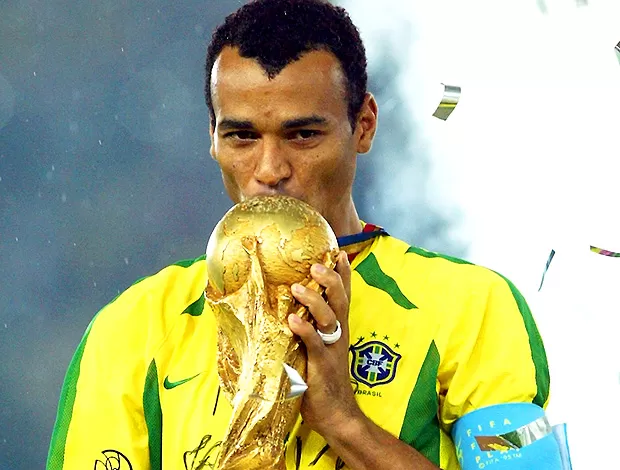

1- Roberto Carlos
Roberto Carlos é um ex-jogador de futebol brasileiro,conhecido por sua habilidade no lateral-esquerdo e por ser uma das maiores referências do futebol brasileiro.
1- Roberto Carlos
Roberto Carlos é um ex-jogador de futebol brasileiro,conhecido por sua habilidade no lateral-esquerdo e por ser uma das maiores referências do futebol brasileiro.

2- Ronaldo Fenômeno
Ronaldo Luís Nazário de Lima, conhecido como Ronaldo Fenômeno, é um ex-jogador de futebol brasileiro, considerado um dos maiores atacantes da história do futebol.

3- Ronaldinho Gaúcho
Ronaldinho Gaúcho é um ex-jogador de futebol brasileiro, conhecido por sua habilidade técnica e criatividade no campo.
4- Rivaldo
Rivaldo é um ex-jogador de futebol brasileiro, conhecido por sua habilidade técnica e visão de jogo.
5- Lúcio
Lúcio é um ex-jogador de futebol brasileiro, conhecido por sua defesa sólida e capacidade de criar oportunidades ofensivas.

6- Cafu
Cafu é um ex-jogador de futebol brasileiro, conhecido por sua velocidade e habilidade no lateral-direito.